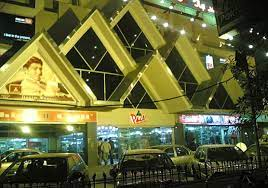

Top 5 mobile markets in Lahore.
Here are the top 5 Mobile Markets in Lahore.
1.Hafeez Center:
Hafeez Center is a multi-story shopping complex located on Main Boulevard Gulberg III.
It is considered one of the largest and most well-known mobile markets in Lahore.
 The market offers a wide range of mobile phones, including both new and used devices,
The market offers a wide range of mobile phones, including both new and used devices,
as well as a variety of accessories such as cases, chargers, headphones, and more.
Hafeez Center is also known for its repair services, where you can
get your mobile devices fixed or serviced.
Website: Hafeez Center
2.Hall Road:
Hall Road is situated near Mall Road, a central location in Lahore.
It is a popular destination for electronics shopping, including mobile phones and accessories.
 The market is known for its extensive selection of mobile phones, tablets, laptops, computer components, and other electronic gadgets.
The market is known for its extensive selection of mobile phones, tablets, laptops, computer components, and other electronic gadgets.
Hall Road is particularly popular among tech enthusiasts and those looking for affordable deals on electronic devices.
Website: Hall Road
3. Liberty Market:
Liberty Market Located in the Gulberg area, Liberty Market is a bustling shopping district in Lahore.
It features a mix of shops selling clothing, shoes, cosmetics, and various other items.
Within Liberty Market, you can find several mobile shops offering a range of smartphones, from budget-friendly options to the latest flagship models.
Additionally, you can explore a variety of mobile accessories such as phone cases, screen protectors, power banks, and more.
Website:Liberty Markeet
4. Pace Shopping Mall:
Situated on M.M. Alam Road in Gulberg, Pace Shopping Mall is a modern shopping complex that attracts shoppers with its upscale ambiance and diverse range of stores.

The mall features numerous mobile shops that offer a wide selection of smartphones from various brands, including both Android and iOS devices.
In addition to mobile phones, you can find accessories like headphones, Bluetooth speakers, smartwatches, and more.
Website: Pace Shopping Mall
5.Fortress Stadium Market:
Fortress Stadium Market: Located near Fortress Stadium.
This market is a popular shopping destination in Lahore.
It is known for its vibrant atmosphere and numerous mobile shops.
The market offers a range of mobile phone options, including both new and used devices.
You can find various brands, models, and price ranges to suit your preferences.
Additionally, the market is a hub for mobile accessories, allowing you to explore
options for cases, screen protectors, cables, and other essentials.
Website: fortress-stadium-shopping-center
Mujtaba Ahmad